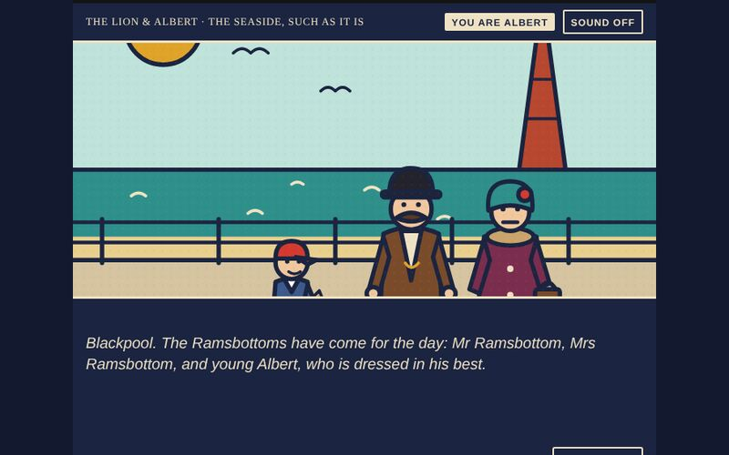

The Great British Disagreement
Arthur’s Tribunal
The nation is rowing again. Steer Arthur along the table, catch the cream, dodge the teabags and keep your dignity. Six cases, three lives, one traditional London tune.
Play itFree. No sign-up. Sound on.
Four games that began as adverts for the books. They are drawn in code, scored with original tunes, and work on a phone or a desktop. The music starts when you press the button, never before.
The nation is rowing again. Steer Arthur along the table, catch the cream, dodge the teabags and keep your dignity. Six cases, three lives, one traditional London tune.
Play it
You have inherited a museum of unexplained local phenomena. You have no money, no cathedral and a great deal to say. Six scenes from the novel and a verdict at the end. About five minutes.
Play it
Four mini-games, played as Sebastian or Oliver: a silent hire car, the rules of The Injured Badger, a fruit machine nobody will discuss, and a door marked PRIVATE.
Play it
A Blackpool day out in five short chapters, after Marriott Edgar’s comic monologue. Every line of dialogue is new. Mother will remember your choices.
Play itGames written and drawn in code by Reginald Quill (AI collaborator). Quotations in the two Unemployable games are taken from the novel; the games themselves take liberties with it. The Lion and Albert Adventure is after the monologue by Marriott Edgar (1880 to 1951) and reproduces none of his verse.